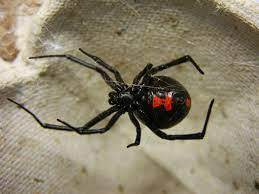
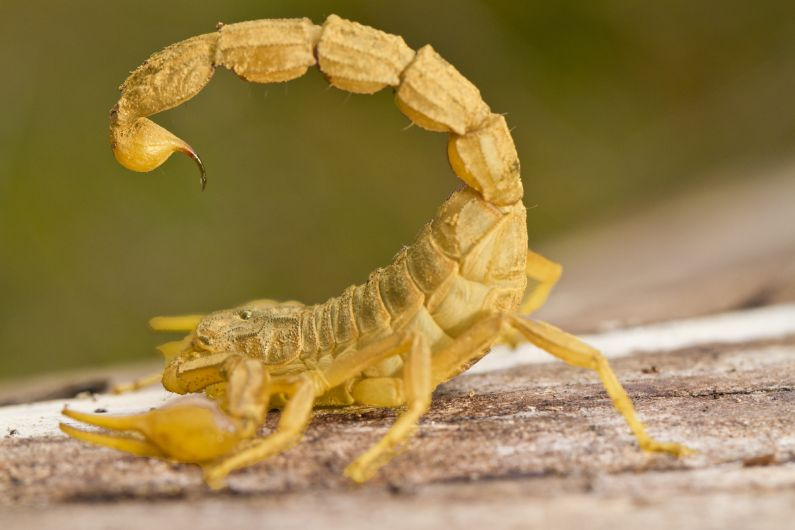

Os sintomas da picada dessa cobra evoluem frequentemente para a Insuficiência Renal Aguda (IRA), e normalmente a parte picada não apresenta uma lesão evidente, apenas uma sensação de formigamento. No entanto, a vítima começa a ter dificuldade para abrir os olhos, apresenta aspecto sonolento, visão turva ou duplicada, dor muscular pelo corpo todo e urina avermelhada.

As viúvas-negras são animais perigosíssimos. Apesar de pequenas, seu veneno é superpoderoso. Elas são encontradas nas vegetações de praia, nas restingas e até em áreas urbanas. Quando picada, a vítima pode sentir angústia, agitação, excitação, confusão mental, dores, contrações musculares, rigidez no abdômen, alterações na pressão arterial e nos batimentos cardíacos. Algumas também apresentam dor muito forte na parte picada e uma sudorese intensa.

Apesar de seu tamanho pequeno, sua letalidade é grande, se a vítima desse escorpião for uma criança menor de sete anos, o risco de mortalidade é alto. No local da picada, a vítima pode sentir uma dor de moderada a muito intensa e começar a suar muito. Além disso, a temperatura corporal abaixa, a pressão arterial sobe, e a vítima começa a salivar e sentir náuseas. Há ainda tremores, convulsões, alterações cardíacas, insuficiência respiratória e vômitos.